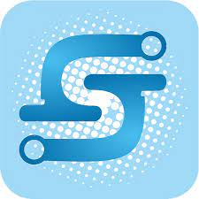

::::UAS ManPro :::
Dikerjakan Oleh :
Anggota Kelompok :
- 1. Yohanes Stanley - 19.N2.0007
- 2. Yohanes Gracia - 19.N2.0014
- kesan: Janganlah menyerah
- VISI DAN MISI
- Menjadi komunitas akademik yang unggul dalam pendidikan, penelitian dan pengabdian dengan dilandasi nilai-nilai Kristiani: cinta kasih, keadilan dan kejujuran
- Menyelenggarakan pendidikan yang berkualitas secara akademik dengan didukung pengembangan kepribadian yang utuh dan potensi kepemimpinan.
- Melakukan penelitian untuk pengembangan ilmu dan teknologi demi meningkatkan kesejahteraan manusia.
- Melakukan pengabdian kepada masyarakat sebagai penerapan ilmu dan teknologi yang telah dikembangkan dalam penelitian dan kesejahteraan manusia.
<<<<<<< Updated upstream
=======
Logo Siega

>>>>>>> Stashed changes